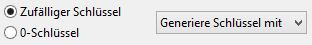
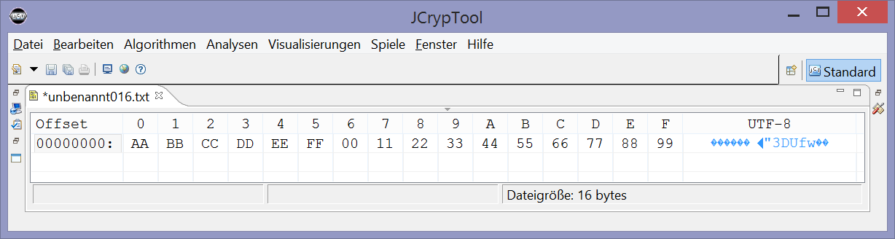
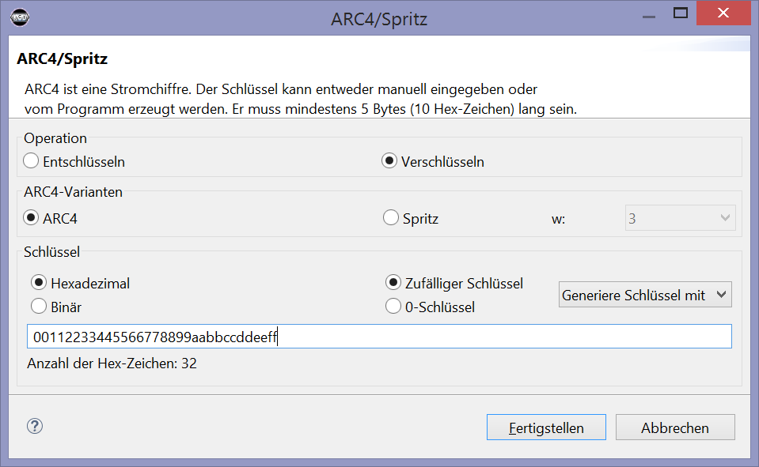

Diese Hilfeseite erklärt die Bedienung des Eingabedialogs der ARC4-Verschlüsselung(ARC4-Krypto-Plug-in). Allgemeine Informationen zu ARC4 und Spritz finden Sie in der Onlinehilfe zum Visualisierungs-Plug-in.
Im Folgenden werden die drei Optionengruppen des Eingabedialogs vorgestellt.
Da ARC4 eine Stromchiffre ist, haben die Buttons „Verschlüsseln“ und „Entschlüsseln“ keine Auswirkung auf den Algorithmus selbst: Zufallsbitfolge XOR Klartext ergibt Chiffrat, und Chiffrat XOR Zufallsbitfolge ergibt wieder den Klartext.
| Da ARC4 nicht nur in einer Variante existiert, gibt es hier die Möglichkeit, zwischen zweien davon zu wählen. Bei Spritz hat man zusätzlich die Möglichkeit, den Parameter w zu setzen. Für genauere Informationen wie Spritz funktioniert, siehe die Onlinehilfe zum ARC4-Visualisierungs-Plug-in. |
| Sie haben die Möglichkeit, zwischen hexadezimaler und binärer Schlüsseldarstellung zu wählen. Wenn Sie den Schlüssel zuerst hexadezimal eingeben, sich dann umentscheiden und Binär eingeben, wird er automatisch umgewandelt. |
| Für ein schnelles Ausprobieren des Algorithmus hat man die Möglichkeit, sich zufällige Schlüssel oder einen Schlüssel mit nur 0-Bits zu generieren. Achtung: Falls man seine Eingabe wieder entschlüsseln möchte und sich einen zufälligen Schlüssel generieren lässt, sollte man ihn vorher kopieren. |  |
| Der "Fertig"-Button wird immer nur aktiv bei ganzen Byte-Eingaben, d.h. bei einer geraden Anzahl eingegebener Hexzeichen. Nibble sind also nicht erlaubt. Bemerkung: Hier gelten die Begrenzungen, die der Algorithmus für Schlüssel vorgibt: mindestens 5 Byte und maximal 256 Byte. | |
In diesem Beispiel wurden dieselben Daten wie im Beispiel am Ende der Onlinehilfe zum ARC4-Visualisierungs-Plug-in benutzt.
Klartext: AA BB CC DD EE FF 00 11 22 33 44 55 66 77 88 99

Schlüssel: 00 11 22 33 44 55 66 77 88 99 AA BB CC DD EE FF

Output: Berechneter Geheimtext: 2F E0 60 8A 7C D8 61 94 DA 6A FD 6E F3 32 F5 0D

Bemerkung: Die Operationen Ver- und Entschlüsseln liefern jeweils dasselbe Ergebnis.